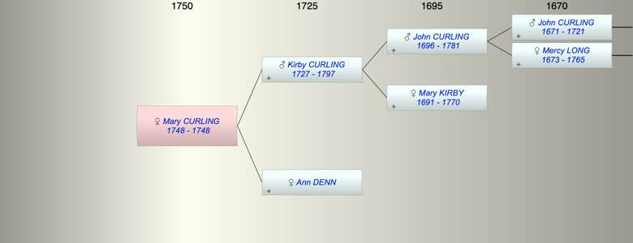

| [Index] |
| Mary CURLING (1748 - 1748) |
|  |
| b. 1748 at Wooton |
| d. 1748 at Wooton aged 0 |
| Parents: |
| Kirby CURLING (1727 - 1797) |
| Ann DENN |
| Events in Mary CURLING (1748 - 1748)'s life | |||||
| Date | Age | Event | Place | Notes | Src |
| 1748 | Mary CURLING was born | Wooton | Note 1 | ||
| 1748 | Mary CURLING died | Wooton | |||
| Note 1: bap Wootton 16 Aug 1748 and died Sep (date illegible) |
| Created on a Mac™ using iFamily for Mac™ on 8 Oct 2023 |